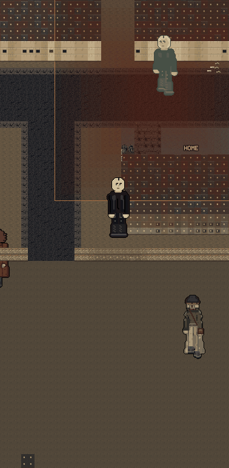

NOBODY STANDS ON ANYBODY
Both pictures are the real game, same street, same second of the evening.
"It looks so fucking bad, why are so many people on top of each other, on each other's ass."


Here is why it happened. Your game kept "one person per square" perfectly. But a person is drawn 112 pixels tall on squares that are 11 pixels wide, so ONE PERSON IS TEN SQUARES WIDE. Two people standing side by side were obeying the rule and still wearing each other. Now the rule is asked about the whole body instead of the square under it.
EVERY HOUR OF THE DAY, NOBODY STACKED
| HOUR | PEOPLE ON YOUR STREET | STACKED ON EACH OTHER |
|---|---|---|
| 3am | 3 | 0 |
| 7am | 8 | 0 |
| 10am | 8 | 0 |
| 1pm | 9 | 0 |
| 5pm | 7 | 0 |
| 8pm | 9 | 0 |
| 11pm | 6 | 0 |
The street did not get emptier to buy this. Spacing people out is what fixed the picture. I also tried making the crowd follow your world's clock, so evenings would be quiet and mornings busy, and I turned it back off: with it on, a whole kind of person stops being close enough to talk to. That one is written down and waiting on you.
AND THE NAMES, SINCE YOU ASKED
You said a little more white people names, keep it natural. I counted first: 55 out of every 100 last names in the bank were Hispanic, and Clark County is about 32. You were right. The bank went from 64 last names to 98 and from 64 first names to 90, all of the new ones filling the gap. Nothing you already had was thrown away.